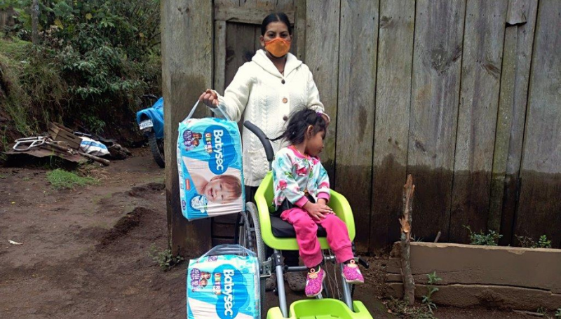

Carlos Rodríguez
Con tu apoyo, Carlos puede tener acceso a educación, alimentación adecuada y oportunidades para un futuro mejor.
ACERCA DE MI Y MI FAMILIA
Nombre: Carlos Rodríguez
Edad: 9 años
Género: Masculino
Personalidad: Alegre, curioso y juguetón
Intereses: Fútbol, dibujo y animales
Ingreso familiar: $120/mes
Hermanos: 2 hermanos menores
Vive con: Madre y abuela
Idioma: Español
Estudia: Sí, tercer grado
Código de apadrinamiento: NINO-2023-0875
ACERCA DE MI HOGAR
Paredes de la casa: Block y cemento
Techería de la casa: Lamina galvanizada
Piso de la casa: Cemento
Fuente de agua: Tubería comunitaria
Acceso a internet: No
Acceso a línea telefónica: Sí, teléfono comunitario
CONTEXTO: POBREZA EN GUATEMALA
En Guatemala, el 59.3% de la población vive en situación de pobreza. En áreas rurales como la comunidad de Carlos, este porcentaje aumenta al 75%. Las familias con niños pequeños son las más afectadas, con limitado acceso a educación, salud y nutrición adecuada.
La pobreza afecta especialmente a niños con discapacidades o problemas de salud, quienes enfrentan barreras adicionales para su desarrollo integral.

Imagen que muestra las condiciones de vida en comunidades vulnerables de Guatemala
IMPACTO DE TU APOYO
Tu donación mensual de $39 proveerá a Carlos:
- Acceso a educación y materiales escolares
- Alimentación balanceada y suplementos nutricionales
- Atención médica y dental regular
- Programas de desarrollo comunitario
- Apoyo psicosocial y actividades recreativas
Con tu apoyo, Carlos podrá romper el ciclo de pobreza y construir un futuro lleno de oportunidades.

Imagen de un niño participando en programas de apadrinamiento